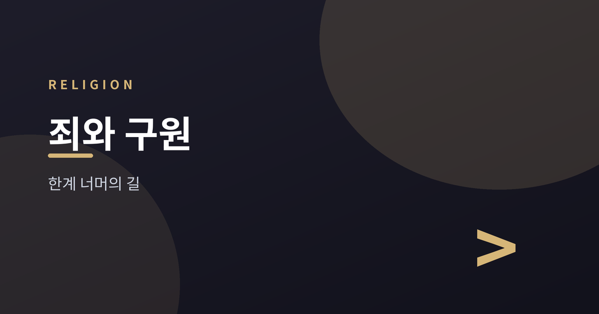
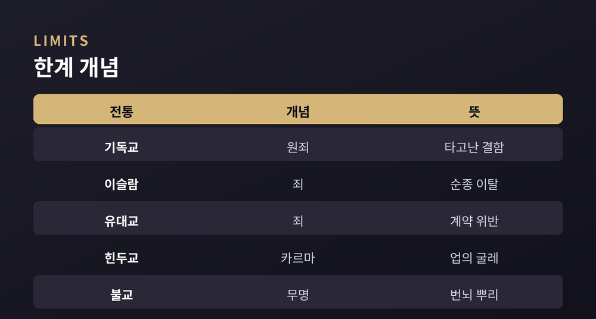
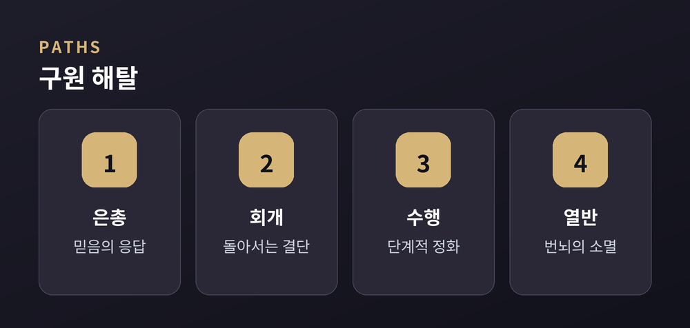
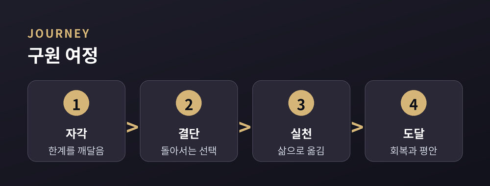
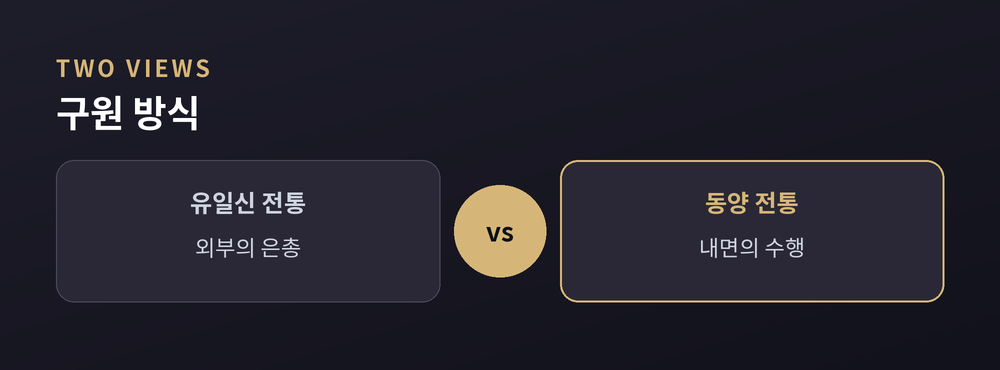

인간의 한계와 그 너머를 향한 여러 길

사람은 왜 완전할 수 없을까요. 이 물음 앞에서 세계 종교는 저마다 답을 마련해 왔습니다. 그 답의 언어는 서로 다르고, 강조하는 지점도 다릅니다.
기독교는 죄를 말하고, 이슬람은 유혹과 망각을 말하며, 불교는 번뇌를 말합니다. 유교는 미숙함이라는 표현에 가깝습니다. 이름은 다르지만 물음은 하나로 모입니다. 인간은 어떻게 자신의 한계를 넘어설 수 있는가 하는 물음입니다. 이 글은 여섯 전통이 그린 답의 지도를 나란히 놓아 봅니다. 어느 쪽이 더 옳은지는 가리지 않습니다. 신학적 진리를 판정하는 것은 이 글의 목적이 아닙니다. 다만 각 전통이 이 문제를 어떻게 이해했는지, 그리고 그 이해가 어떤 실천으로 이어지는지를 비교종교학의 시선으로 소개하고자 합니다.
먼저 '한계'를 부르는 이름부터가 전통마다 다릅니다. 기독교에서는 인간이 태어날 때부터 하나님과의 관계가 어긋나 있다고 보는 관점이 있습니다. 이를 원죄라 부릅니다. 다만 이 개념을 문자 그대로의 유전적 결함으로 볼지, 관계의 단절이라는 상징으로 볼지는 신학 전통 안에서도 입장이 갈립니다. 이슬람에서는 인간이 본래 선한 본성, 곧 피트라를 지녔으나 유혹과 망각으로 길을 벗어난다고 봅니다. 죄는 결함이라기보다 방향의 이탈에 가깝다는 설명입니다. 유대교 역시 죄를 관계의 어긋남으로 이해하는 경향이 있습니다. 신과 맺은 언약에서 벗어난 상태, 곧 계약 공동체의 규범을 저버린 상태라는 것입니다.
동양 전통의 설명은 결이 조금 다릅니다. 힌두교는 카르마, 즉 업의 굴레를 말합니다. 지은 행위가 원인이 되어 다음 생의 결과를 규정한다는 것입니다. 여기서 한계는 도덕적 결함이라기보다 무한히 반복되는 윤회의 구조 그 자체에 가깝습니다. 불교는 더 근본적으로 무명을 지목합니다. 실재를 있는 그대로 보지 못하는 어리석음이 갈애를 낳고, 갈애가 번뇌를 낳으며, 번뇌가 다시 괴로움을 낳는다고 설명합니다. 이는 도덕적 심판보다는 인식의 오류에 가까운 설명 방식입니다. 유교는 죄보다는 미숙함에 가깝게 인간을 봅니다. 인간의 본성은 원래 선하다고 보는 입장이 유력하지만, 사욕에 흔들리는 마음을 다스리지 못한 상태를 문제 삼는다는 점에서는 다른 전통과 통하는 면이 있습니다.

유일신을 믿는 세 전통은 한계를 넘어서는 길로 각기 다른 강조점을 둡니다. 기독교에서는 인간의 노력만으로는 이 간극을 메울 수 없다고 보는 관점이 널리 퍼져 있습니다. 대신 신의 은총이 먼저 다가온다고 말합니다. 믿음으로 그 은총에 응답하는 것이 구원의 길이라는 설명입니다. 다만 은총과 인간의 역할을 얼마나 강조할지는 교파와 신학 전통마다 입장이 상당히 갈립니다. 어떤 흐름은 은총의 절대적 우선성을 강조하고, 어떤 흐름은 인간의 응답과 실천을 함께 중시합니다.
이슬람은 타끄와, 곧 신을 향한 경외와 의식을 중요하게 여깁니다. 잘못을 저질렀을 때는 진심으로 뉘우치고 돌아서는 태도가 강조됩니다. 이를 타우바라 부르기도 합니다. 심판의 날에 각자의 행위가 저울에 달린다는 상징적 표현도 함께 전해집니다. 여기서 자비는 인간의 노력과 무관한 일방적 시혜라기보다, 진실한 회개에 응답하는 관계적 성격을 지닌다고 설명되곤 합니다. 유대교에서는 테슈바라는 개념이 핵심입니다. 문자 그대로는 '돌아섬'을 뜻합니다. 잘못을 인정하고 방향을 바꾸어 다시 언약의 길로 들어서는 과정을 가리킵니다. 유대교 전통에서는 신과의 관계뿐 아니라 이웃과의 관계를 회복하는 일도 함께 강조됩니다. 세 전통 모두 회개와 자비, 그리고 관계 회복을 중심에 둔다는 점에서는 닮아 있습니다. 그러나 그 관계 회복이 어떤 절차와 매개를 통해 이루어지는가에 대해서는 저마다 다른 설명 체계를 지니고 있습니다.

힌두교에서 궁극의 목표는 목샤, 곧 해탈입니다. 윤회의 굴레에서 벗어나 참된 자아를 깨닫는 상태를 뜻합니다. 이를 위한 길은 하나가 아닙니다. 지혜를 통한 길, 헌신을 통한 길, 행위를 통한 길 등 여러 갈래가 전해집니다. 어느 길을 따를지는 수행자의 기질과 상황에 따라 달라질 수 있다는 설명도 함께 전해집니다. 불교는 번뇌의 소멸을 열반이라 부릅니다. 팔정도라는 여덟 가지 실천 항목을 통해 무명을 걷어내고 괴로움의 원인을 소멸시키는 과정을 제시합니다. 이는 초월적 존재의 개입보다는 스스로의 통찰과 수행을 중심에 둔 설명 방식입니다. 다만 불교 안에서도 부파나 전통에 따라 자력의 수행을 강조하는 흐름과, 타력의 도움을 함께 말하는 흐름이 공존합니다.
유교는 구원이라는 표현보다 수양이라는 말을 즐겨 씁니다. 극기복례, 곧 사사로운 욕심을 이겨 내고 예로 돌아간다는 개념이 대표적입니다. 학문과 성찰을 통해 인격을 다듬어 군자에 이르는 과정을 이상으로 삼습니다. 여기서 목표는 초월적 세계로의 이행이 아니라, 현세의 관계와 도리를 바로잡는 데 있습니다. 부모와 자식, 임금과 신하, 벗과 벗 사이의 관계를 성실히 가꾸는 일이 곧 수양의 실천이라는 것입니다. 내세의 구원보다는 지금 이곳의 인격 완성에 무게를 둔 전통이라 할 수 있습니다.

지금까지 살핀 내용을 정리하면, 한계를 넘어서는 길은 크게 두 방향으로 나뉩니다. 하나는 외부로부터 오는 은총과 자비에 기대는 길입니다. 다른 하나는 내면의 수행과 통찰을 쌓아 가는 길입니다. 물론 이 구분이 절대적이지는 않습니다. 유일신 전통에도 수행과 실천, 금식과 자선 같은 행위가 있고, 동양 전통에도 헌신과 귀의, 절대자에 대한 신앙에 가까운 요소가 있습니다. 두 방향은 서로 배타적이라기보다, 강조점이 어디에 놓이는가의 차이로 이해하는 편이 더 정확할 것입니다.
그럼에도 여러 전통을 가로지르는 공통된 흐름은 짚어볼 만합니다. 먼저 자신의 한계를 자각하는 단계가 있습니다. 이어 잘못된 방향에서 돌아서려는 결단이 따릅니다. 그다음은 삶 속에서 이를 꾸준히 실천하는 단계이며, 마지막은 회복이나 평안에 이르는 단계입니다. 이름은 회개일 수도, 참회일 수도, 깨달음일 수도 있습니다. 그러나 구조만 놓고 보면 여러 전통이 비슷한 여정을 그리고 있다는 점은 흥미롭습니다. 자각 없이는 결단이 나오지 않고, 결단 없이는 실천이 이어지지 않으며, 실천 없이는 회복도 요원하다는 순서 역시 여러 전통에서 공통적으로 발견됩니다.
인간이 자신의 한계를 인정하는 순간, 그 너머를 향한 걸음이 이미 시작됩니다.

세계 종교는 인간의 부족함을 서로 다른 언어로 짚어 냈습니다. 그리고 그 너머를 향한 길도 저마다 다르게 그렸습니다. 어느 지도가 정확한지는 이 글이 답할 몫이 아닙니다. 각 전통은 오랜 시간 축적된 자기 나름의 논리와 체험을 바탕으로 그 지도를 그려 왔습니다. 다만 서로 다른 지도를 나란히 펼쳐 보는 일만으로도, 인간이라는 존재를 조금 더 깊이 이해할 수 있을 것입니다. 완전하지 않다는 사실을 인정하는 태도, 그것이 어쩌면 모든 전통이 조용히 공유하는 첫걸음일지도 모릅니다.